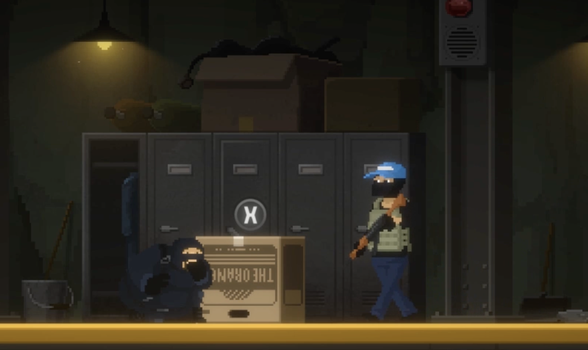

前言
说实话，这游戏我真是跟风买的；对于这游戏媒体完美发挥了它的作用，MTC90分上下
圈内圈外人都在吹，有几个平常不玩单机游戏的朋友都在朋友圈里发了相关的信息，这可
狠狠把我的胃口吊上来了，只不过下半年又忙，游戏又满，姑且就拖到了年底才来品鉴这
部甜点作。
初见，浅讲，概况
游戏主要围绕着大叔戴夫和朋友的寿司店开始，核心玩法围绕白天下海捕鱼，晚上经营
寿司店展开，也就是一个ARPG加上模拟经营，这套东西刚开始让我想起了前年（22）的咩
咩启示录，但因为游戏机制的深度十分之浅，导致戴夫这游戏在核心玩法上的缝合比咩咩
自然的多；但核心玩法深度浅不代表这游戏不耐玩，制作组用了最简易的方式，也就是“堆
料”，凭着最简单的RPG构筑，木棒打龙虾那套给上玩家持续驱动力，用足够多五花八门的
大家都认识的鱼代替龙虾，最后还告诉你，唉，这个鱼你还可以做成各种各样的寿司，玩家
兴趣自然就上来了。接着，游戏在游戏的任务，主线，RPG构筑，近乎所有玩法里又塞入了
业界顶尖的像素动画演出，用最夸张的方式抓住玩家的兴趣，想经营好寿司店，想捕大鱼，
想看新演出这些一系列的驱动力叠加到一块，成了潜水员戴夫这游戏足够上头的一大原因。
韩国人，TMD淫才
潜水员戴夫最让我印象深刻的其实是它游戏流程前10h的节奏设计，在你一个区域玩腻了
时，它如同读心般给你扔出下一个图，抑或是新的玩法新的演出，新的故事，总之，这游戏
前半部分的节奏设计堪称天才，把玩家注意力狠狠按在游戏上。

更逆天的是它有些玩法是用完即弃的，游戏中有一个偷东西的玩合金装备梗的关卡，这个玩法
只用了一次，素材只用了一把，这个可以说是相当有觉悟了
代价
但这种疯狂的设计方式必然会有代价，游戏模拟经营部分玩法就是送菜和厨房打下手，也就
是打工，这使得游戏主线进入鲛人村，往里添加解谜的时候，无可避免的开始无聊，本来打这
个游戏就相当于打工了，你还让我给非我族类通马桶属实很栽人神经。游戏自从把鲛人村加进
去之后，节奏就有点一泻千里了，倒不是说差到哪去，但他强制让你某些任务必须上岸
这么让玩家做资源管理是没错，但来回带着目的的上岸下水很消磨玩家心态。这个不得不品。
评价
这游戏对轻度游戏玩家简直友好的不能再友好了，整合了市面上很多游戏的玩法精华，是我觉得
适合新人入坑的单机之一，但如果肉鸽或者模拟经营玩多了，再玩这个，说实话，会稍显无聊，虽
然他的缝合足够优秀，但这些缝合有点停留在表面。说白了就是，都玩过。而且因为游戏深度浅，
导致就算是没玩过这类游戏的人玩多了也会觉得累。
但往这个方向设计是没错的，所以MGN8.5，
植物油脂高级甜点，用料没说有太好，但是做的精细，好吃爱吃，但吃多会腻